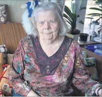

Erna Lauritse Marø
K, #42652
Foreldre
Biografi
Erna Lauritse Marø ble født Trondheim, Sør-Trøndelag. Hun døde 8 måneder gammel på/i Trondheim, Sør-Trøndelag.
| Sist redigert |
16 juli 2022 21:05:55 |
| Slektskap | 8-menning til Håkon Wahl |
Evald Johannes Marø
M, #42653, f. 16 juni 1899, d. 15 desember 1984
Foreldre
Biografi
Evald Johannes Marø ble født den 16 juni 1899 Marøya, Nærøy, Nord-Trøndelag. Han døde den 15 desember 1984 på/i Trondheim, Sør-Trøndelag. Han ble gravlagt på/i Lade kirkegård, Trondheim, Sør-Trøndelag.
Evald Johannes Marø ble døpt den 24 september 1899 på/i Rørvik kapell, Vikna, Nord-Trøndelag. Han bodde på/i Trondheim, Sør-Trøndelag. Han. hadde eget bilverksted.
| Sist redigert |
9 januar 2018 00:00:00 |
| Slektskap | 7-menning 1 gang forskjøvet til Håkon Wahl |
Jenny Agnethe Marø
K, #42654, f. 19 mai 1902, d. 1984
Foreldre
Biografi
Jenny Agnethe Marø ble født den 19 mai 1902 Marøya, Nærøy, Nord-Trøndelag. Hun giftet seg med
Einar Olai Myhre Kristensen Ormø den 31 desember 1923 på/i Brønnøy, Nordland. Hun døde i 1984 på/i Brønnøysund, Brønnøy, Nordland.
Jenny Agnethe Marø was also known as Jenny Margrethe Ormø. Hun ble døpt den 27 juli 1902 på/i Nærøy, Nord-Trøndelag. Hun ble konfirmert den 1 juli 1917 på/i Nærøy, Nord-Trøndelag.
| Sist redigert |
24 mars 2025 19:54:01 |
| Slektskap | 7-menning 1 gang forskjøvet til Håkon Wahl |
Lilly Emelie Marø
K, #42655, f. 29 mai 1906, d. 2 mai 1997
Foreldre
Biografi
Lilly Emelie Marø ble født den 29 mai 1906 Nærøy, Nord-Trøndelag. Hun giftet seg med
Oskar Marius Bogen i 1926. Hun døde den 2 mai 1997 på/i Minneapolis, Hennepin County, Minnesota, USA. Hun ble gravlagt på/i Lakewood cemetery, Minneapolis, Hennepin, Minnesota, USA.
Lilly Emelie Marø was also known as Lilly Emelie Maro Bogen. Hun emigrerte fra Minneapolis, Hennepin County, Minnesota, USA, i 1949.
| Sist redigert |
4 mars 2025 12:29:56 |
| Slektskap | 7-menning 1 gang forskjøvet til Håkon Wahl |
Oskar Marius Bogen
M, #42656, f. 5 februar 1902, d. juli 1978
Foreldre
Biografi
Oskar Marius Bogen ble født den 5 februar 1902 Kolvereid, Nærøy, Nord-Trøndelag. Han giftet seg med
Lilly Emelie Marø i 1926. Han døde i juli 1978 på/i Minneapolis, Hennepin County, Minnesota, USA.
Oskar Marius Bogen kjøpte i 1927 Garmannvik 1/3, Torstad, Nærøy, Nord-Trøndelag.
| Sist redigert |
4 mars 2025 12:29:56 |
| Slektskap | 7-menning 1 gang forskjøvet til Håkon Wahl |
Henry Johannes Bogen
M, #42657, f. 29 juni 1927, d. 27 august 1966
Foreldre
Biografi
Henry Johannes Bogen ble født den 29 juni 1927 Nærøy, Nord-Trøndelag. Han giftet seg med
Alice Nystuen. Han døde den 27 august 1966 på/i San Francisco County, California, USA. Han ble gravlagt på/i Lakewood cemetery, Minneapolis, Hennepin, Minnesota, USA.
Henry Johannes Bogen emigrerte til USA i 1949.
| Sist redigert |
17 april 2026 23:56:50 |
| Slektskap | 8-menning til Håkon Wahl |
Oddmund J. Bogen
M, #42658, f. 4 august 1929, d. 1971
Foreldre
Biografi
Oddmund J. Bogen ble født den 4 august 1929 Nærøy, Nord-Trøndelag. Han døde i 1971 på/i Minnesota, Usa.
Oddmund J. Bogen innvandret til USA i 1929.
| Sist redigert |
9 oktober 2024 00:32:49 |
| Slektskap | 8-menning til Håkon Wahl |
Emma Elise Sandnesaunet
K, #42661, f. 1 august 1890, d. 20 september 1890
Foreldre
Biografi
Emma Elise Sandnesaunet ble født den 1 august 1890 Nærøy, Nord-Trøndelag. Hun døde den 20 september 1890 på/i Nærøy, Nord-Trøndelag.
| Sist redigert |
20 januar 2007 00:00:00 |
| Slektskap | 6-menning 2 ganger forskjøvet til Håkon Wahl |
Emma Sandnesaunet
K, #42662, f. 31 juli 1891, d. 17 november 1978
Foreldre
Biografi
Emma Sandnesaunet ble født den 31 juli 1891 Nærøy, Nord-Trøndelag. Hun døde den 17 november 1978 på/i Nærøy, Nord-Trøndelag. Hun ble gravlagt den 24 november 1978 på/i Lundring kirkegård, Nærøy, Nord-Trøndelag.
| Sist redigert |
15 januar 2009 00:00:00 |
| Slektskap | 6-menning 2 ganger forskjøvet til Håkon Wahl |
Julie Petrine Sandnesaunet
K, #42663, f. 28 mars 1894, d. 24 august 1952
Foreldre
| Sønn | Paul Olsen+ (f. 28 juni 1928, d. 11 februar 1994) |
| Datter | Åse Olsen (f. 28 juni 1928, d. 8 desember 2006) |
Biografi
Julie Petrine Sandnesaunet ble født den 28 mars 1894 Nærøy, Nord-Trøndelag. Hun døde den 24 august 1952.
| Sist redigert |
20 januar 2007 00:00:00 |
| Slektskap | 6-menning 2 ganger forskjøvet til Håkon Wahl |
Paul Olsen
M, #42664, f. 28 juni 1928, d. 11 februar 1994
Foreldre
Biografi
Paul Olsen ble født utenfor ekteskap den 28 juni 1928 Nærøy, Nord-Trøndelag. Han giftet seg med
Lilly Elise Søraa. Han døde den 11 februar 1994. Han ble gravlagt den 18 februar 1994 på/i Lundring kirkegård, Nærøy, Nord-Trøndelag.
Paul Olsen ble døpt den 2 september 1928 på/i Nærøy, Nord-Trøndelag. Han eide i 1957 Aspli 7/7, Sandnesaunet, Nærøy, Nord-Trøndelag.
| Sist redigert |
20 august 2024 00:00:07 |
| Slektskap | 7-menning 1 gang forskjøvet til Håkon Wahl |
Åse Olsen
K, #42665, f. 28 juni 1928, d. 8 desember 2006
Foreldre
Biografi
Åse Olsen ble født den 28 juni 1928 Nærøy, Nord-Trøndelag. Hun giftet seg med Hansen. Hun døde den 8 desember 2006 på/i Drammen, Buskerud. Hun ble gravlagt den 21 desember 2006 på/i Klæbu kirke, Klæbu, Sør-Trøndelag.
Åse Olsen was also known as Åse Hansen. Hun bodde på/i København, Danmark.
| Sist redigert |
20 januar 2007 00:00:00 |
| Slektskap | 7-menning 1 gang forskjøvet til Håkon Wahl |
Lilly Elise Søraa
K, #42666, f. 26 mai 1929, d. 15 april 2024
Foreldre
Familie: Paul Olsen (f. 28 juni 1928, d. 11 februar 1994)

Lilly Søraa Olsen
Biografi
Lilly Elise Søraa ble født den 26 mai 1929 Nærøy, Nord-Trøndelag. Hun giftet seg med
Paul Olsen. Hun døde den 15 april 2024. Hun ble gravlagt den 25 april 2024 på/i Lundring kirkegård, Nærøysund, Trøndelag.
Lilly Elise Søraa was also known as Lilly Elise Olsen.
| Sist redigert |
19 august 2024 23:53:47 |
| Slektskap | 6-menning 1 gang forskjøvet til Håkon Wahl |
Laurits Marius Olsen Søraa
M, #42667, f. 4 oktober 1905, d. 12 juli 1937
Foreldre
Biografi
Laurits Marius Olsen Søraa ble født utenfor ekteskap den 4 oktober 1905 på/i Søråa, Nærøy, Nord-Trøndelag. Han giftet seg med
Ester Norheim i 1927. Han døde den 12 juli 1937 på/i Nærøy, Nord-Trøndelag. Han ble gravlagt på/i Torstad kirkegård, Nærøy, Nord-Trøndelag.
Laurits Marius Olsen Søraa ble døpt den 26 november 1905 på/i Nærøy, Nord-Trøndelag.
| Sist redigert |
28 mars 2025 00:00:28 |
| Slektskap | 6-menning til Håkon Wahl |
Ester Norheim
K, #42668, f. 14 august 1908, d. 5 januar 1965
Foreldre
Biografi
Ester Norheim ble født den 14 august 1908 Ottersøy, Nærøy, Nord-Trøndelag. Hun giftet seg med
Laurits Marius Olsen Søraa i 1927. Hun døde den 5 januar 1965 på/i Gjesdal, Rogaland.
Ester Norheim was also known as Ester Søraa.
| Sist redigert |
19 februar 2015 00:00:00 |
| Slektskap | 6-menning 1 gang forskjøvet til Håkon Wahl |
Olaus Pareli Bruun Hansen
M, #42669, f. 1841
Biografi
Olaus Pareli Bruun Hansen ble født i 1841 Simenvik, Roan, Sør-Trøndelag. Han giftet seg med
Elen Jensdatter.
| Sist redigert |
20 januar 2007 00:00:00 |
Elen Jensdatter
K, #42670, f. 1846
Biografi
| Sist redigert |
20 januar 2007 00:00:00 |
Hans Peder Jensen Oddvik
M, #42671, f. 24 august 1875, d. 29 september 1958
Foreldre
Biografi
Hans Peder Jensen Oddvik ble født den 24 august 1875. Han giftet seg med
Johanna Henriette Marie Pedersdatter Sund den 29 september 1898. Han døde den 29 september 1958 på/i Nærøy, Nord-Trøndelag. Han ble gravlagt den 8 oktober 1958 på/i Kolvereid kirkegård, Nærøy, Nord-Trøndelag.
| Sist redigert |
24 mai 2014 00:00:00 |
Johanna Henriette Marie Pedersdatter Sund
K, #42672, f. 30 april 1876, d. 30 januar 1955
Foreldre
Biografi
Johanna Henriette Marie Pedersdatter Sund ble født den 30 april 1876 Bø, Nordland. Hun giftet seg med
Hans Peder Jensen Oddvik den 29 september 1898. Hun døde den 30 januar 1955 på/i Nærøy, Nord-Trøndelag. Hun ble gravlagt den 5 februar 1955 på/i Kolvereid kirkegård, Nærøy, Nord-Trøndelag.
Johanna Henriette Marie Pedersdatter Sund was also known as Johanna Henriette Marie Oddvik.
| Sist redigert |
24 mai 2014 00:00:00 |
| Slektskap | 9-menning 4 ganger forskjøvet til Håkon Wahl |
Jens Hansen Lund
M, #42673, f. 28 januar 1845, d. 30 november 1921
Foreldre
Biografi
Jens Hansen Lund ble født den 28 januar 1845. Han giftet seg med
Christine Margrethe Ulriksdatter den 7 juni 1878. Han døde den 30 november 1921 på/i Nærøy, Nord-Trøndelag.
Jens Hansen Lund ble født den 28 januar 1846.
| Sist redigert |
17 februar 2010 00:00:00 |
Pauline Aletta Pedersdatter
K, #42674, f. 21 mai 1847, d. 19 august 1887
Biografi
Pauline Aletta Pedersdatter ble født den 21 mai 1847. Hun døde den 19 august 1887 på/i Nærøy, Nord-Trøndelag.
Pauline Aletta Pedersdatter was also known as Pauline Aletta Lund.
| Sist redigert |
20 januar 2007 00:00:00 |
Ole Andreassen Oddvik
M, #42675, f. 1832, d. 24 september 1870
Foreldre
Biografi
Ole Andreassen Oddvik ble født i 1832 Overhalla, Nord-Trøndelag. Han giftet seg med
Anne Julianne Johannesdatter den 22 oktober 1857. Han døde den 24 september 1870 på/i Reitgjerdet sykehus, Strinda, Trondheim, Sør-Trøndelag.
| Sist redigert |
28 januar 2010 00:00:00 |
{kind=link}